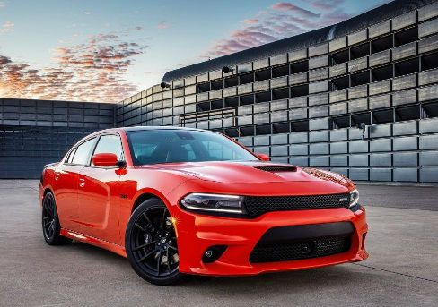

Dodge

Dodge - Charger
O modelo passa a oferecer o sedã produzido em série mais rápido e potente do mundo, O novo Dodge Charger Hellcat 2020 segue com o motor 6.2 V8 supercharger, que consegue desenvolver 716 cavalos de potência. Há ainda o Launch Assist, que utiliza sensores de velocidade nas rodas para analisa o comportamento do carro em largadas e, em questão de milissegundos, modifica a entrega de torque para recuperar a aderência.